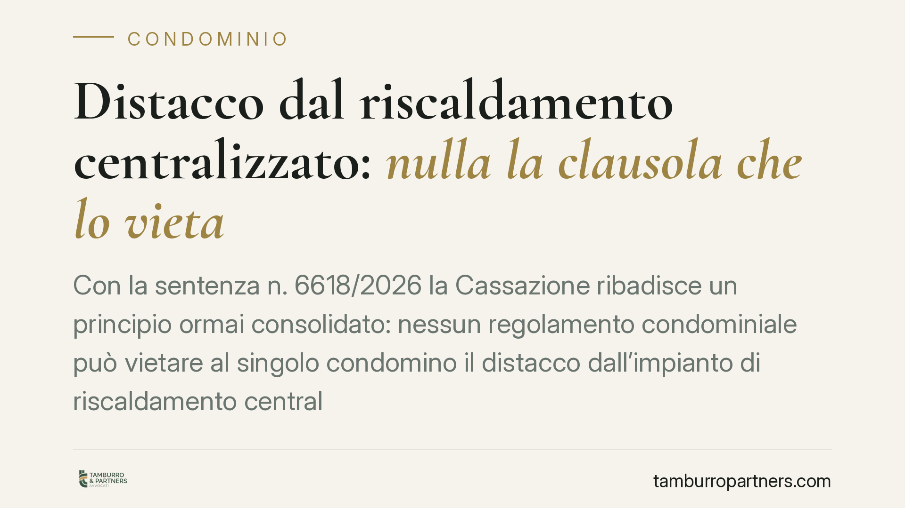

Distacco dal riscaldamento centralizzato: nulla la clausola che lo vieta
Con la sentenza n. 6618/2026 la Cassazione ribadisce un principio ormai consolidato: nessun regolamento condominiale può vietare al singolo condomino il distacco dall'impianto di riscaldamento centralizzato. La facoltà esiste, a precise condizioni tecniche. Resta però l'obbligo di partecipare ad alcune spese. Un chiarimento utile per chi valuta soluzioni di riscaldamento autonomo.

Il principio affermato dalla Cassazione
La Corte di Cassazione, Sezione II civile, con la sentenza n. 6618 del 19 marzo 2026, torna su un tema ricorrente nella vita condominiale: la possibilità per il singolo condomino di distaccarsi dall'impianto di riscaldamento centralizzato.
Il punto fermo è questo: ogni clausola del regolamento condominiale che vieti in modo assoluto il distacco è nulla. Non può essere applicata, nemmeno se approvata all'unanimità o inserita in un regolamento di natura contrattuale (cioè accettato da tutti i condomini al momento dell'acquisto).
Inquadramento normativo
La disciplina di riferimento è l'articolo 1118, comma 4, del Codice civile, introdotto dalla riforma del condominio (legge n. 220/2012). La norma stabilisce che il condomino può rinunciare all'utilizzo dell'impianto centralizzato di riscaldamento o condizionamento a due condizioni: che dal distacco non derivino notevoli squilibri di funzionamento dell'impianto e che non si determinino aggravi di spesa per gli altri condomini.
Si tratta di un diritto previsto dalla legge. Per questo motivo una clausola regolamentare che lo neghi contrasta con una norma inderogabile e non produce effetti. La Cassazione, con la sentenza in commento, si pone in continuità con un orientamento già espresso in passato, consolidandolo.
La stessa norma precisa che il condomino distaccato resta tenuto a concorrere al pagamento delle spese per la manutenzione straordinaria dell'impianto e per la sua conservazione e messa a norma. In altre parole: non paga più il consumo di calore che non utilizza, ma continua a contribuire alla tenuta dell'impianto comune.
Cosa cambia per il condomino e per l'assemblea
Per il singolo condomino che intenda passare a un sistema autonomo, la pronuncia è una conferma utile: l'assemblea non può opporre un divieto generalizzato, né trincerarsi dietro il regolamento per bloccare la richiesta.
Attenzione, però, al perimetro effettivo del diritto. Il distacco non è automatico. Occorre dimostrare, in genere tramite una relazione tecnica di un professionista abilitato, che l'uscita dall'impianto non comprometta il funzionamento per gli altri né generi per loro maggiori costi. Se questa prova manca, l'assemblea può legittimamente opporsi.
Sul fronte economico, il condomino distaccato esce dal riparto delle spese di consumo, ma non da quelle di conservazione e di manutenzione straordinaria. Dimenticare questa distinzione è l'errore più frequente: il distacco riduce i costi, non li azzera.
Per l'amministratore, infine, resta il compito di gestire correttamente il riparto, tenendo separate le voci di spesa e aggiornando i criteri di ripartizione in conseguenza del distacco.
Cosa fare in concreto
- Acquisisci una relazione tecnica redatta da un tecnico abilitato che attesti l'assenza di squilibri di funzionamento e di aggravi di spesa per gli altri condomini: è il presupposto del distacco.
- Comunica per iscritto la volontà di distacco all'amministratore, allegando la documentazione tecnica, prima di procedere con qualsiasi intervento sull'impianto.
- Verifica il regolamento condominiale: se contiene un divieto di distacco, non lasciarti bloccare, ma affronta la questione con il supporto di un professionista perché la clausola è priva di effetti.
- Metti in conto le spese residue: il distacco libera dai costi di consumo, non da quelli di conservazione e manutenzione straordinaria dell'impianto comune.
- Chiedi all'amministratore l'aggiornamento dei criteri di riparto, così da evitare addebiti non dovuti negli esercizi successivi.
La materia tocca profili tecnici e giuridici intrecciati. Consigliamo di valutare ogni caso singolarmente, perché l'esito dipende dalle caratteristiche concrete dell'impianto e dalla documentazione a supporto.
---
*Contributo informativo a cura di Tamburro & Partners - Avv. Giuseppe Tamburro. Non costituisce parere legale.*
Ogni condominio ha una storia a sé.
Se gestisci un'amministrazione e vuoi un confronto su una specifica questione condominiale, scrivi allo studio. Ti rispondiamo entro un giorno lavorativo.